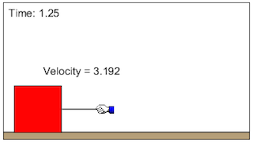

This model simulations a box subject to an external force. In order for there to be motion, the applied force must overcome the static friction. Students can adjust the magnitude of the applied force and the mass of the box to see how the static and kinetic frictions affect the motion.